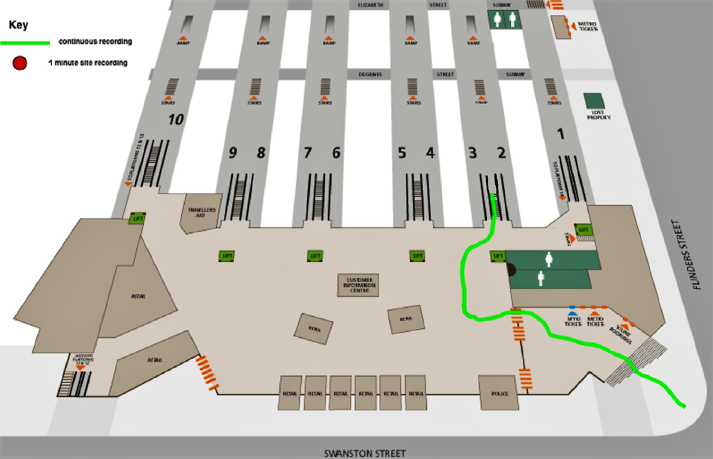

An immersive journey preparation tool for people with vision impairment
Dung Lai, Chris McCarthy, David Sly, Harrison Bennett, Matt Shackleton , Stuart Favillla
I. Web platform
Ambisonic has been encoded in 360 video using Facebook 360 Encoder and deployed in Youtube as a 360 video. This will make the video compatible with VR mode. Users can use Google cardboard or Oculus Rift to navigate and change direction.
The video can also be rotated by sliding the video or using controller on the top left of the video.
For mobile user, rotating mobile device will also move the direction of the camera.
Flinder Street Station Map

Please choose one location
Audio recorded by Sennheiser Ambeo VR 360 Microphone
Use headphone for best experience
Rotating by:
Tilting your phone
WASD key
Watch in VR mode
Drag your mouse
Slide your finger
Use navigation controller on top left of the video
Voice recognition and speech synthesis
Commands list:
help
what is this?
where am i
when (was the video) recorded
next location
replay
The project
With almost one in five Australians experiencing some form of disability, a large proportion of the community face challenges to actively participate in city life.
This project (a participant for the Open innovation competition on city accessibility in 2018) is a proof of concept for a long-term technology-enabled solution to issues experienced by people with vision impaired.
Method
We develop an auditory-based simulator to simulate the sensory experience of a specific location in Melbourne’s CBD. The idea is to provide people who have vision impairment and blindness an immersive tool that allows them to experience the sounds of environments they plan to walk through. The simulator would allow them to rotate their body and hear the sounds change as they rotate.
In order to archive what we call “immersive” experience, we use Ambisonic Technology [1]: a full-sphere surround sound technique, in addition to the horizontal plane, it covers sound sources above and below the listener
Sounds are recorded by a tetrahedron microphone (left image) to get 4-channel monophonic A-format. This is converted into 4-channel B-format using mathematical formula shown below [1]. B-format file contains XYZ directions which covers all 3 dimensions. W channel is called omnidirectional.
II. Desktop Platform
For desktop platform, we development a standalone application using Max/MSP - a visual programming language for music and multimedia.
We make use of Hedrot - Open-Source Head Tracker. This product can be integrated in headphone tracks yaw-pitch-roll value when users rotate.
Hedrot parts --- Schematics --- Build headtracker --- Integrate Headtracker to headphone
Below is desktop application interface, users can choose a specific location to play the sound, headtracker will automatically be detected once plugged in:
Main procedure: start by loading 4 separate mono channels, convert to B format audio using sennheiser ambeo a-b format converter. After that, sound field is changed by ambix-rotator plug-in, this plug-in use yaw-pitch-roll data from Headtracker. Finally, ambix_biaural plug-in is used as a HRTF (head related transfer function) so that the output is 2 channel audio that can be played through headphone.
Narration and Audio Description based on user’s head direction
The surround area will be described, description is on-request and dynamically adjusted based on head direction. The yaw value from headtracker is extracted and separated into 4 parts: front, back, left and right. Audio cue will be played based on the head direction.